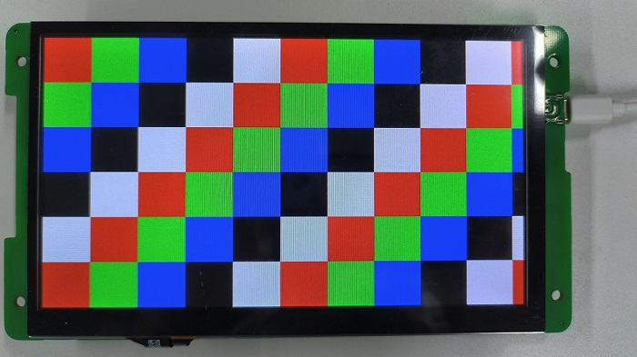
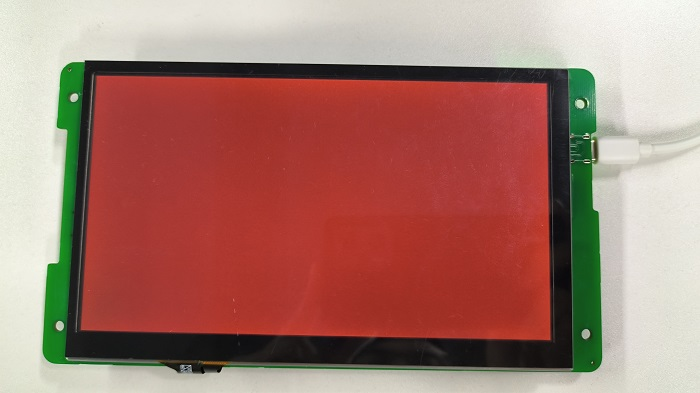
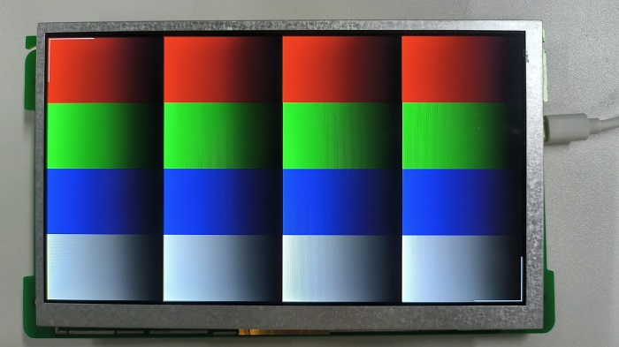

调试指南
15 Jan 2024
Read time: 2 minute(s)
注： DE colorbar 优先级最高，进行其他测试前需要禁用 DE colorbar。
打开调试开关
在 Luban-Lite 根目录下执行 scons --menuconfig，进入
menuconfig 的功能配置界面，按如下选择，启用显示驱动的调试信息输出 pr_debug()
，并编译显示驱动测试用例：
Drivers options --->
Drivers debug --->
[*] Enable Display driver debug启动显示纯色矩形
在 Luban-Lite 根目录下执行 scons --menuconfig，进入 menuconfig
的功能配置界面，按如下选择：
Board options --->
Graphics Support --->
[*] Display color block系统启动时，CPU 在 framebuffer 上绘制红，绿，蓝，黑和白五种纯色矩形，矩形大小为 100x100。

调试 DE Color Bar 模式
显示引擎 Color Bar 模式，忽略 framebuffer 数据，直接向显示接口传输 Color Bar 数据。Color Bar
模式仅供调试使用。
注：
DE Color Bar 优先级最高，进行其他测试前需要禁用 DE Color Bar。
-
使能 Color Bar 模式命令:
m 0x18a00004 1 m 0x18a00008 1
-
禁用 Color Bar 模式命令:
m 0x18a00004 0 m 0x18a00008 1

测试背景色输出
显示引擎忽略 framebuffer 数据，输出特定背景色 。背景色测试可用于检测 RGB pin 的输出状态是否正确。
-
设置背景色命令：
bg_color -m 1 -r 128 -g 0 -b 0
上述命令生效后，仅 R7 引脚为高电平，其余数据 pin 为低电平。
- 禁用背景色命令：
bg_color -m 0

获取 framebuffer 渐变色块
CPU 在 framebuffer 上绘制红，绿，蓝，白四种矩形渐变色块。色块高度自适应屏幕，宽度固定 256，颜色从 0-255 进行渐变，并在对角处附带标定信息。
framebuffer
绘制渐变色块命令：
test_fb -b

-
test_fb-b 命令直接修改 framebuffer 内容，显示效果不可逆。
-
支持 ARGB8888 和 RGB565 格式 framebuffer。
-
RGB565 格式，色块从 0-255 进行渐变，RGB 只有 32/64 色，每 4/8 个像素点共用一个颜色，会存在色阶现象。